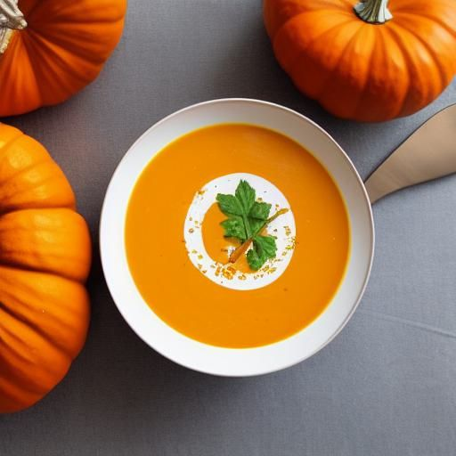

Potage à la citrouille
Ingrédients
-
4 t de citrouille

-
1 t de céleri
-
1/2 t d'oignon
-
1 t de patate en dés
-
3 c. à soupe de beurre
-
3 t de bouillon de poulet
-
sel et poivre
Instructions
Couper la citrouille, le céleri, les oignons et les patates.
- 4 t de citrouille
- 1 t de céleri
- 1/2 t d'oignon
- 1 t de patate en dés
Faire sauter le tout dans 3 c. à soupe de beurre pendant 10 minutes.
Ajouter 3 t de bouillon de poulet, le sel et le poivre. Réduire le feu. Mijoter de 20 à 25 minutes.
Passer au mélangeur.
Mettre sur feu doux.